At our various testing centers, New Horizons provides convenient locations,
conducive environment and flexible delivery models.
We have one of the most secured delivery systems in Nigeria, one that delivers tests
every day of the week, any week of the year, in any of individual testing centers. You
can expect us to deliver customized services to meet all of your specific needs,
including eligibility setting, scheduling and registration, test distribution and
administration, test taker identity management, voucher distribution, and billing and
payment.
The new role-based AWS certifications establish a learning path from the
AWS Fundamentals level to the Associate level and then to the
Professional level. Here are the List of AWS Certifications

 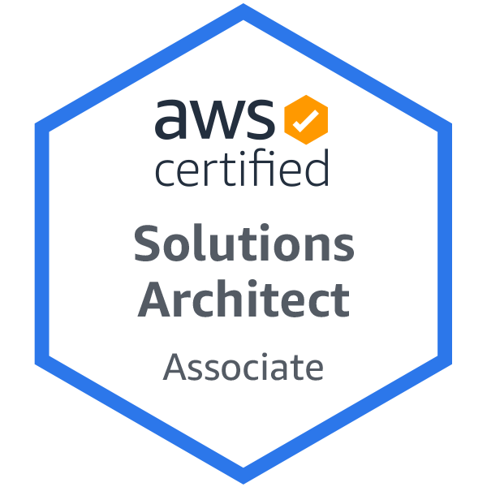
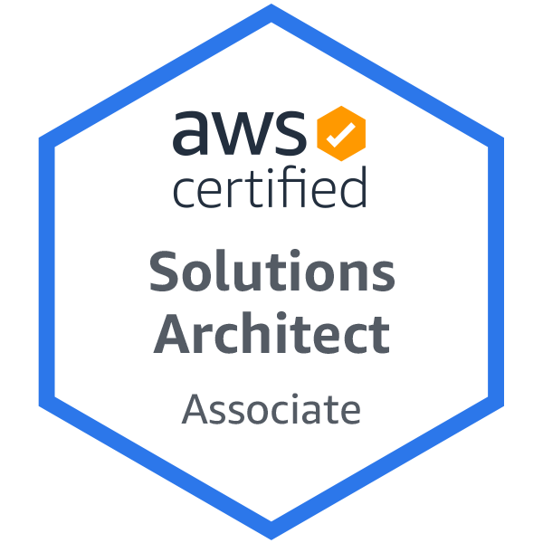


 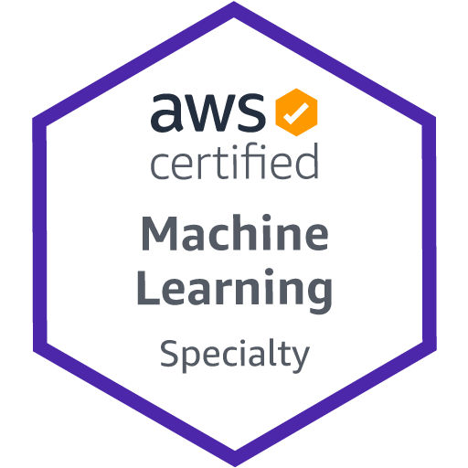
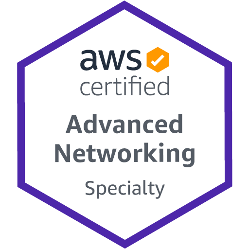
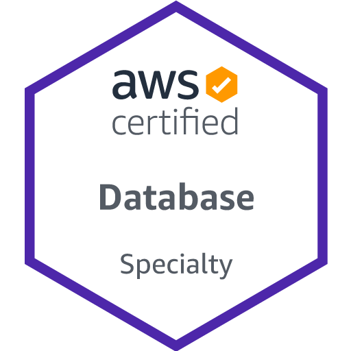
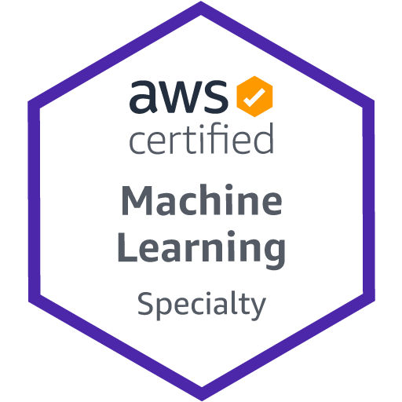
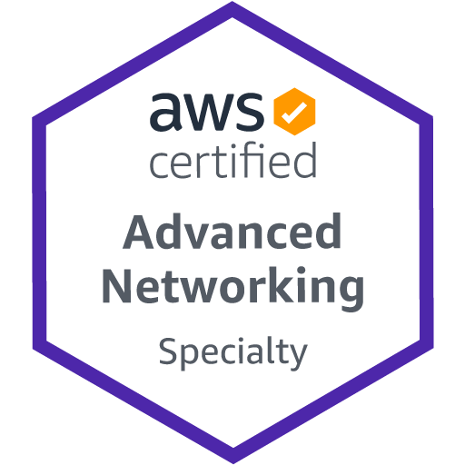
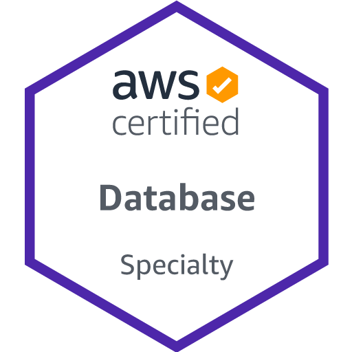

The new role-based Azure certifications establish a learning path from the
Azure Fundamentals level to the Associate level and then to the
Professional level. Here are the List of Azure Certifications
When it comes to what you put in versus what you get out, the
CompTIA certification is most definitely worth it, find below list of
CompTIA certifications:

 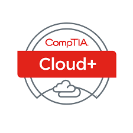
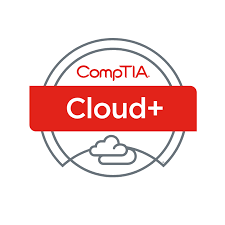
ITIL 4 Foundation certification is designed as an introduction to ITIL
4 and enables candidates to look at IT service management through an
end-to-end operating model for the creation, delivery and continual
improvement of tech-enabled products and services.
ITIL certifications demonstrate that professionals are educated in IT
Service Management (ITSM) best practices. Aligning IT with the business
can save time, reduce waste and help IT avoid costly
rework. ITIL 4 concepts are vendor-neutral and address the processes,
terminology and methods used in modern IT.
CISCO certification is still worth it. Whether you would have already
holding a Cisco certification or are considering earning your first, getting
up to speed on the changes would help you out in determining where you
are required to begin on the certification path.
This exam tests your knowledge of software development and
design, including: Understanding and using APIs, Cisco platforms
and development Application development and security
Infrastructure and automation.
Achieving the Cisco Certified CyberOps Associate certification
ignites your career in cybersecurity operations. To earn the
CyberOps Associate certification, you pass one exam that covers
the fundamentals of cybersecurity operations, skills, and
procedures.
This exam tests your knowledge of software development and
design, including: Using APIs, Cisco platforms, Application
deployment and security, Infrastructure and automation


 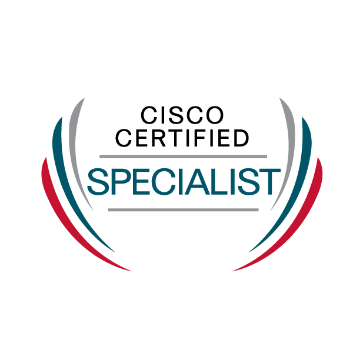
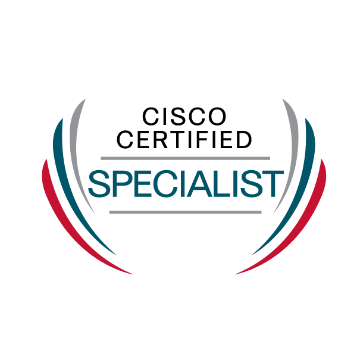
The new role-based MTA certifications establish a learning path from the
MTA Fundamentals level to the Associate level and then to the Expert
level. Here are the List of MTA Certifications :–


In an increasingly projectized world, PMI professional certification ensures
that you’re ready to meet the demands of projects and employers across
the globe.
Developed by practitioners for practitioners, our certifications are based
on rigorous standards and ongoing research to meet the real-world needs
of organizations. With a PMI certification behind your name, you can work
in virtually any industry, anywhere in the world, and with any project
management methodology.
Wherever you are in your career, we have a certification for you.
New Horizons Nigeria is the leading ICT Training and
Exam Testing Institute with over 15 years cognitive
experience in Nigeria